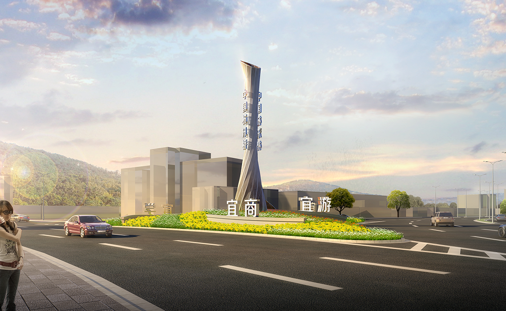
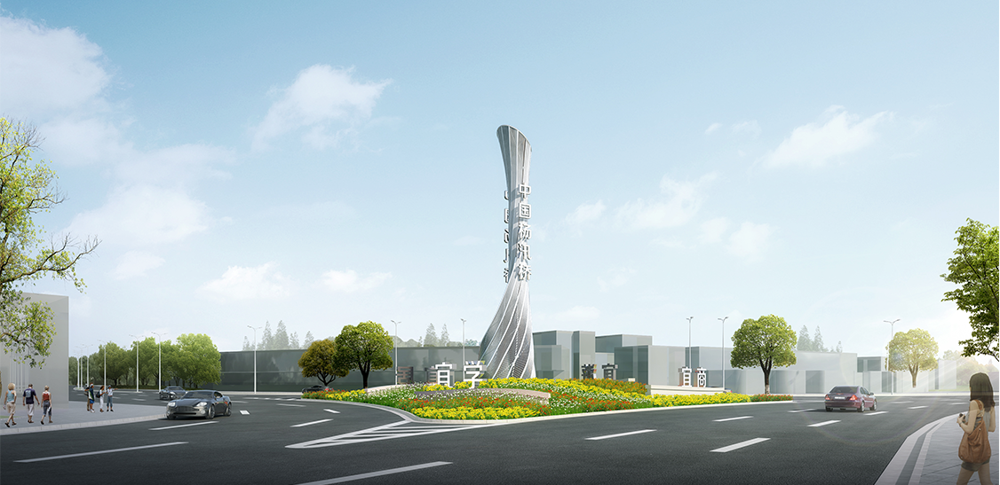
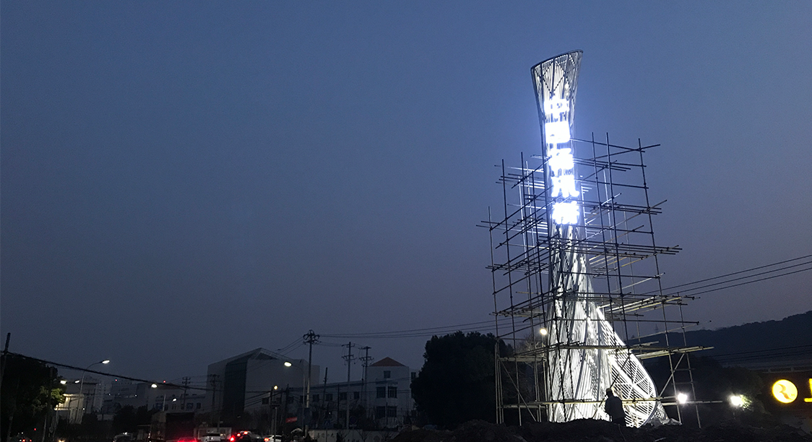

浙江绍兴柯桥区西入口雕塑
The west entrance sculpture of Keqiao District, Shaoxing
项目地点：绍兴杨汛桥镇
设计时间：2017年
杨汛桥镇西临杭州萧山，是绍兴主要的西大门。全镇以 民营经济为主导，以建筑建材、 纺织印染、经编家纺、五金。 是全市唯一的国家可持续发展实验区、全国小城镇综合改革 试点镇和中国经编名镇，先后荣获省级文明镇、卫生镇、环 境优美镇、浙江省“东海明珠” 等荣誉称号。 凤凰朝天的形态 所呈现的旋转向上的优美曲线, 经斟酌提炼，成为雕塑外形设 计的灵感来源,像征着杨汛桥产业的涅槃重生、生机盎然。寓 意着一个新时代即将来到。
  返回顶部
返回顶部